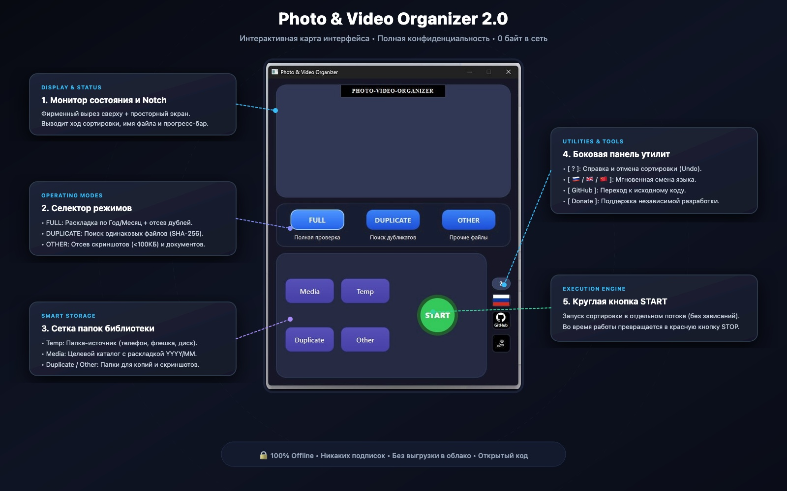

Бескомпромиссная автономная сортировка фотоархивов. 100% приватность. 0 байт в сеть. Портативный .exe без установки.
Никакой телеметрии, облаков и скрытых выгрузок. Ваши семейные архивы, документы и фото остаются строго на вашем компьютере.
Извлечение реальной даты съемки даже у снимков с профессиональных фотокамер (Canon, Nikon, Sony, Fuji) и iPhone HEIC.
Хэш SHA-256 гарантирует, что копии выявляются со 100% точностью и бережно изолируются в папку Duplicates без случайного удаления.
Мгновенное переключение между русским, английским и китайским языками одним кликом с динамической сменой флагов.
Ошиблись папкой? Встроенный манифест истории позволяет вернуть все файлы в исходное состояние в один клик.
Единый готовый файл PhotoVideoOrganizer.exe. Никаких установок, библиотек и командных строк.
